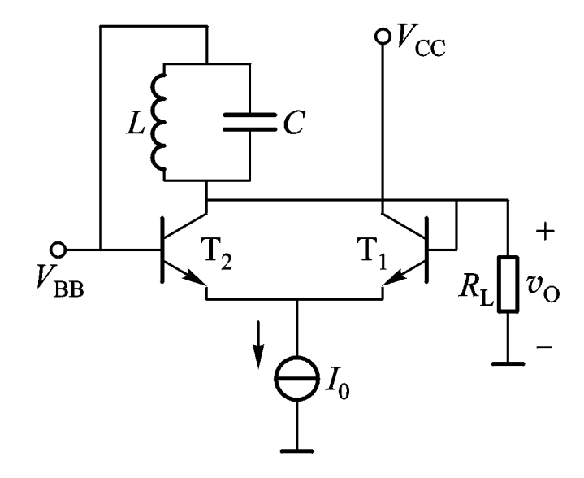
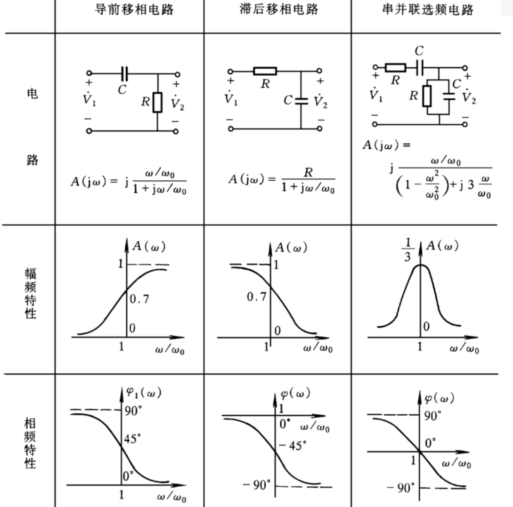

第三章 振荡器
- 定义: 不外加输入信号, 自动地将交流转换为直流.
工作原理
- 起振条件:
- T>1.
- φ=2nπ.
- 起振过程中, 可以使用小信号等效计算.
- 平衡条件:
- T=1. (巴克豪森准则)
- φ=2nπ.
LC振荡器
三点式振荡器
- 起振条件: B-E, C-E之间电抗同性; B-C至今啊电抗异性.
- 类型: 电容三点式, 电感三点式.
- 注: 需要根据直流工作点, 判断BJT能否正常工作.
- 起振条件: ω=LC1. 其中, L,C 为串联总电感/电容.
差分对管振荡电路
- 在反馈环路中验证极性, 主要关注经过一圈环路后极性是否仍为正.
- 在这种电路中, 一般无需在意L,C带来的相移.

RC振荡器
- 导前移相: 高通. 移 0∼90∘.
- 滞后移相: 低通. 移 0∼90∘.
- 串并联选频网络: 带通. 移 −90∘∼90∘.
- 注: 相移可以是0度, 用来进行相位平衡.

石英晶体振荡器
- 一般用于三点式振荡器中.
- 晶体并联型: 用作电感.
- 晶体串联型: 用作导线. 可以对电路进行选频.
- 注: 添加晶体后, 振荡器类型不再是"三点式", 而变为"串联/并联型晶体振荡器".